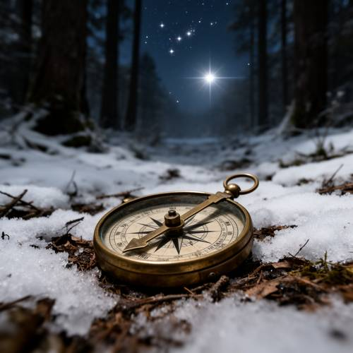
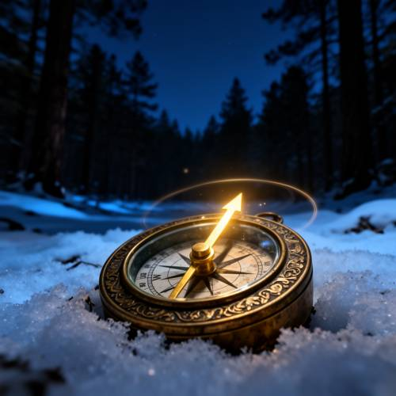
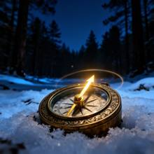

Compound — Generating picture: An ancient brass compass is abandoned on the snowy
Generating picture: An ancient brass compass is abandoned on the snowy forest floor. Its hands do not point north and south, but point with a glimmer at an invisible star in the sky.

Direct — one call, no iteration

Continuum — Kimi K3 + FLUX.2-dev
Judge — Direct
FAILCompound - Imagination — The image shows a compass with its needle pointing towards a very bright and visible star in the sky. The star itself has a glimmer. However, the prompt requires the star to be 'invisible,' which is not depicted in the image. The glimmer originates from the star, not the compass hand.
FAILLogical Reasoning — The image correctly shows an ancient brass compass on a snowy forest floor, and its hand points towards the sky rather than north or south. However, it fails a key part of the logical instruction: the compass points at a very bright and clearly visible star, whereas the prompt explicitly states the star should be 'invisible.'
Judge — Continuum
PASSCompound - Imagination — The image depicts a compass with a primary hand that is a glowing, glimmering arrow. This arrow is angled upwards, pointing toward the dark night sky. There is no specific, visible star that the arrow is pointing to, which aligns with the concept of pointing at an 'invisible star'.
PASSLogical Reasoning — The image shows a compass with an ornate, detailed brass-colored casing, giving it an ancient appearance. It is positioned on the ground amidst snow in a forest setting at night. The main hand of the compass is glowing and is angled upwards towards the sky, rather than pointing flatly along the north-south axis of the compass dial. The object it points to in the sky is not visible, fulfilling the prompt's requirement of pointing to an 'invisible star'.
What the agent did
Thinking
Generate an image of an ancient brass compass on snowy forest floor, hands glowing pointing at an invisible star.
Step 1 — `generate_image`
{
"model": "flux2-dev",
"prompt": "An ancient brass compass, tarnished and ornate with engraved markings, half-buried in fresh snow on a dark winter forest floor. The compass needles glow with a faint ethereal golden light, tilted upward, pointing toward an empty patch of deep twilight sky above the trees \u2014 no star visible there, only darkness where the needles insist something shines. Soft blue moonlight across the snow, tall dark pine trunks in the background, faint glimmering halo around the compass glass. Cinematic close-up, shallow depth of field, atmospheric winter night scene."
}
Result img_0

Thinking
The image looks quite good: ancient ornate brass compass in snow, glowing golden needle pointing upward toward a dark sky, forest at night. The needle points up-left toward the sky. There's a halo ring. It matches the prompt well. Mark best and stop.
Model
The image came out strong on the first pass: an ornate tarnished brass compass half-buried in snow, its needle glowing golden and tilted upward toward a dark, starless patch of twilight sky above the pines — exactly the "pointing at an invisible star" idea. The forest, moonlit snow, and atmosphere all match the prompt.
Step 2 — `mark_best`
{
"image": "img_0",
"reason": "Matches the prompt fully: ancient engraved brass compass abandoned on snowy forest floor, glowing needle pointing not north but upward toward an invisible star in the night sky."
}
Model
Here's your image: an ancient engraved brass compass lying abandoned in the snow of a moonlit pine forest. Its needle glows with a golden, otherworldly light and tilts upward past the compass face, pointing toward a dark patch of night sky where no star is visible — yet it insists one is there. A faint halo of light rings the glass, and the surrounding woods fade into deep blue shadow.